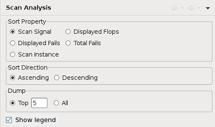

Scan View preference settings
The Scan View preference page lets you specify display options for the Scan view of the Integrated Result Tool.

The Sort Property section specifies how the displayed scan chains are sorted:
- Scan Pin: by the pin through which the scan chains are accessed
- Displayed Flops: by the number of flops displayed (scan chain length)
- Displayed Fails: by the number of fails in the displayed parts of the scan chains
- Total Fails: by the number of fails in the scan chains (including the parts not shown in the scan view)
- Scan Instance: by the name of the displayed scan instance (only if multiple scan instances are shown)
The Sort Direction section specifies whether small or large values are shown first:
- Ascending: small values are shown first
- Descending: large values are shown first
The Dump section specifies the number of failing flops displayed in the UI Report and the Eclipse Console:
- Top: for each chain, outputs the number of fails in the specified number of most-failing cells. Default is set to 5.
- All: outputs the number of fails in all the failing cells
If the Show Legend option is activated, an explanation of the values represented by the different shade of gray is shown in the scan view.
Functional changes
- Introduced in SmarTest 7.2.2
- SmarTest 7.3.2: Added option to sort by scan instance
- SmarTest 7.4.3: Added option to dump top or all failing flops to UI Report and Eclipse console